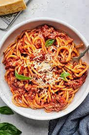

Spaghetti

Description
Spaghetti is a classic Italian pasta made from durum wheat semolina, known for its long, thin strands that are perfect for twirling around a fork. Its versatile nature makes it a favorite in many households, pairing beautifully with a variety of sauces, from the rich and hearty tomato-based Bolognese to the simple yet elegant aglio e olio.
Whether served as a comforting weeknight meal or a sophisticated dish for special occasions, spaghetti is a timeless staple that brings a taste of Italy to your table.
Ingredients
- Spaghetti pasta
- Olive oil
- Garlic
- Tomatoe sauce
- Parmesan cheese
Steps
Cook spaghetti
Bring a large pot of salted water to a boil. Add the spaghetti pasta and cook according to package instructions until al dente. Reserve 1 cup of pasta water before draining.Prepare sauce
While the spaghetti is cooking, heat olive oil in a large skillet over medium heat. Add minced garlic and sauté until fragrant, about 1 minute. Be careful not to let it brown.Combine pasta and sauce
Add the cooked spaghetti to the skillet with the garlic. Pour in the tomato sauce and toss well to coat the spaghetti. If the sauce is too thick, add some reserved pasta water to reach your desired consistency.Season and serve
Season the spaghetti with salt and pepper to taste. Cook for an additional minute to heat through. Remove from heat and sprinkle grated Parmesan cheese over the top.Garnish and enjoy
Serve the spaghetti hot, garnished with fresh basil leaves if desired. Enjoy your delicious homemade spaghetti!